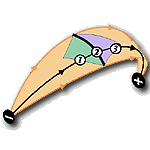

|  |
Computing Visibility for Triangulated Panoramas
,
and
,
|
Abstract
-
- A visibility algorithm for triangulated panoramas is proposed. The algorithm can correctly resolve the visibility without making use of any depth information. It is especially useful when depth information is not available, such as in the case of real-world photographs. Based on the optical flow information and the image intensity, the panorama is subdivided into variable-sized triangles, image warping is then efficiently applied on these triangles using existing graphics hardware. The visibility problem is resolved by drawing the warped triangles in a specific order. This drawing order is derived from epipolar geometry. Using this partial drawing order, a graph can be built and topological sorting is applied on the graph to obtain the complete drawing order of all triangles. We will show that the time complexity of graph construction and topological sorting are both linear to the total number of triangles.
- A visibility algorithm for triangulated panoramas is proposed. The algorithm can correctly resolve the visibility without making use of any depth information. It is especially useful when depth information is not available, such as in the case of real-world photographs. Based on the optical flow information and the image intensity, the panorama is subdivided into variable-sized triangles, image warping is then efficiently applied on these triangles using existing graphics hardware. The visibility problem is resolved by drawing the warped triangles in a specific order. This drawing order is derived from epipolar geometry. Using this partial drawing order, a graph can be built and topological sorting is applied on the graph to obtain the complete drawing order of all triangles. We will show that the time complexity of graph construction and topological sorting are both linear to the total number of triangles.
Download Paper
- Acrobat: panowalk.pdf (4.29 MB)
Blending of Two Warped Panoramas
| Image warped from the first node alone (holes are highlighted in green) | |
| Drawing order of triangles in the first warped panorama | |
| Image warped from the second panoramic node | |
| Drawing order of triangles in the second warped panorama | |
| Blending two warped panoramas together | |

{kind=link}
{kind=link}
{kind=link}
{kind=link}
Animation
The following animations demonstrate the warping and blending result of combining two panoramas. Both animations are in QuickTime movie format.|
Attic (4Mb) |
| |
|
City (6Mb) |
|